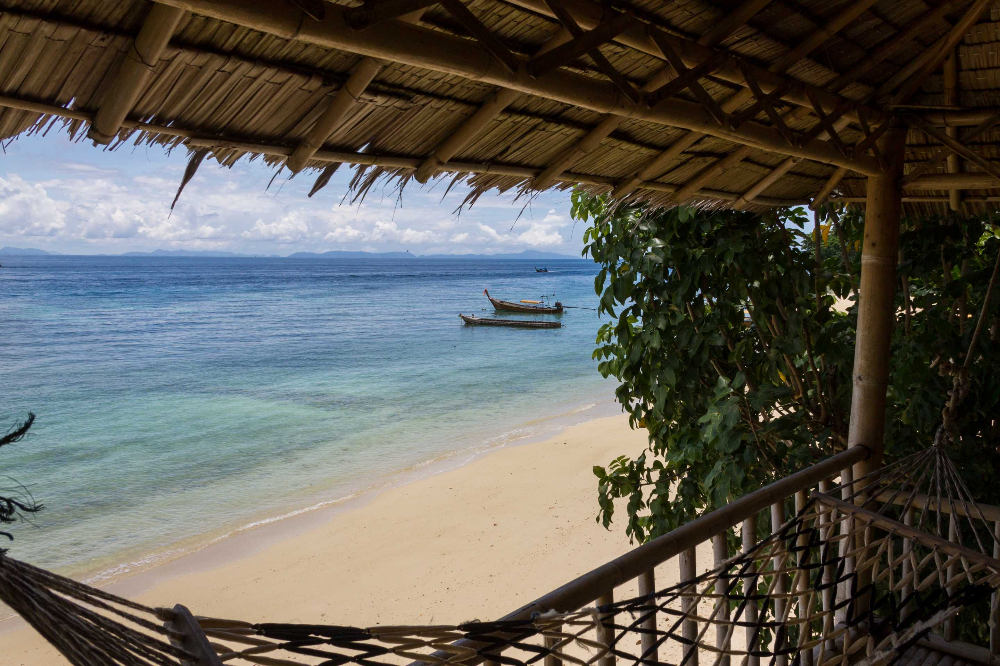
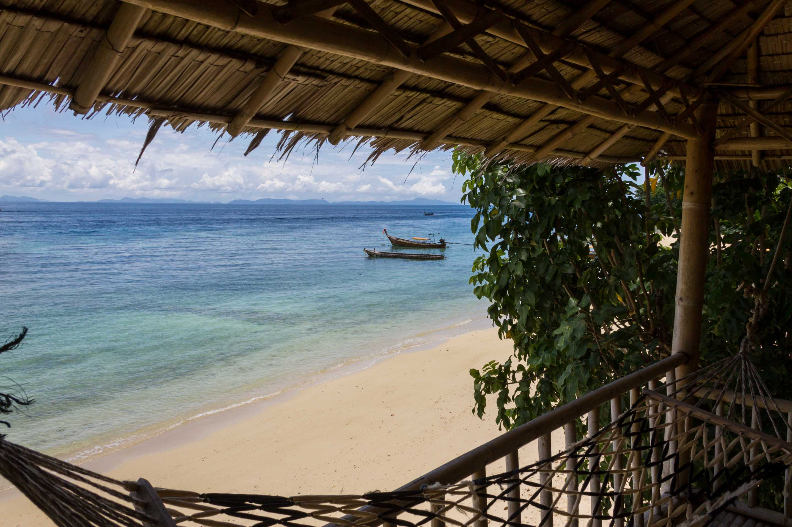
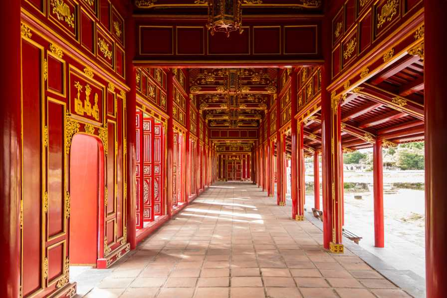
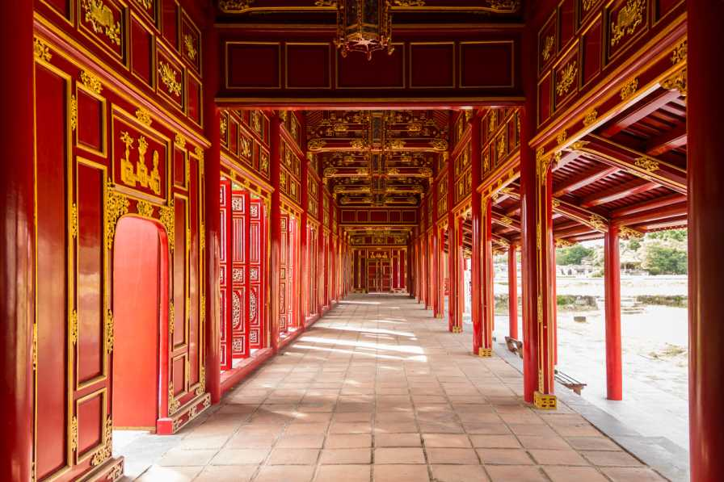
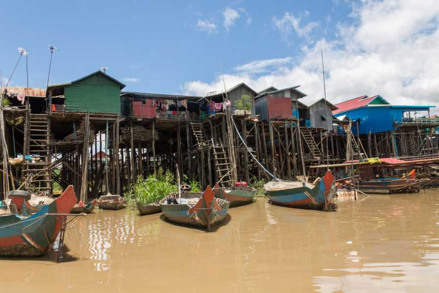
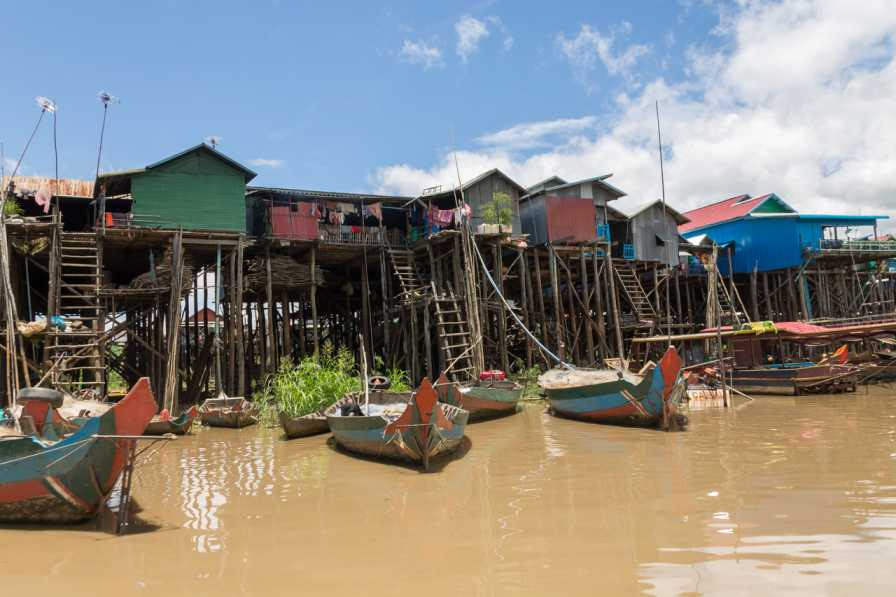

Siamo entusiasti di presentarvi le nostre destinazioni top del momento:
Thailandia, India, Peru, Vietnam e Cambogia.
Ognuna di queste destinazioni ha molto da offrire ai viaggiatori, tra cultura, cibo, storia e paesaggi mozzafiato.
Thailandia, India, Peru, Vietnam e Cambogia.
Ognuna di queste destinazioni ha molto da offrire ai viaggiatori, tra cultura, cibo, storia e paesaggi mozzafiato.

 



 

 
